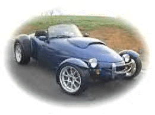
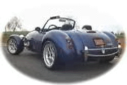

Panoz AIV Roadster

Specs
Price |
$56,750 |
Top Speed |
150mph(est.) |
Acceleration |
|
Engine |
|
0-30mph |
N/A |
Type |
V8, 32valve DOCH |
0-60mph |
4.5sec |
Displacement |
4.6L(4605cc) |
0-100 |
N/A |
Power |
305hp@5800rpm |
1/4 mile |
N/A |
Torque |
300 lbs-ft@4800rpm |
Weight |
2,459 lbs |
Handling |
|
Gas mileage |
|
Skidpad |
N/A |
City |
17mpg |
600ft slalom |
N/A |
Highway |
N/A |
Powertrain |
Front engined, rear wheel drive, 5 speed manual |
(? = incomplete data or unverified info, N/A = info Not Available)
Beyond the specs:
The only modern competitor of the much cheaper Plymouth Prowler, this car is a lot faster that any thing from Chrysler short of the Viper. The Panoz Roadster got its Ford V8 strait from a Mustang, the only reason this car can out accelerate a Corvette is because of its very light weight. This car is fun to drive, it handles well, it accelerates very fast, and on top of that, it is fuel-efficient. This car is like a modern interpretation of the Caterham Super Seven HPC except with a more little luxury. This car was built by a fairly young company that has recently been attracting attention with cars like this and the Esperante. All of their car look a little odd though, especially their Le Mans race car. This car is no exception, and from some angles, it looks quite good, but if you drove it you probably would not care much about what it looks like at all. Through use of aluminum, this car achieves its lightweight while providing a pretty strong chassis. This car is perfect for those who like to attract attention while getting the thrill of there life out accelerating traffic and enjoying the responsive handling expected of a lightweight this wide (76.5in wide).
~Oracle